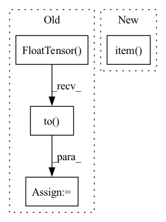

Pattern ID :6183
Before Change
domain_accs_D.update(domain_adv_D.domain_discriminator_accuracy, x_s.size(0))
domain_accs_D_0.update(domain_adv_D_0.domain_discriminator_accuracy, x_s.size(0))
labels_in_target = torch.FloatTensor([c in target_idxes for c in labels_s]).to( device)
labels_in_target_num = labels_in_target.sum()
if labels_in_target_num != 0:
avg_importance = (weight.squeeze() * labels_in_target / labels_in_target_num).sum()
importance_weights.update(avg_importance.item(), int(labels_in_target_num.item()))After Change
partial_class_weight, non_partial_classes_weight = \
importance_weight_module.get_partial_classes_weight(w_s, labels_s)
partial_classes_weights.update(partial_class_weight.item(), x_s.size(0))
non_partial_classes_weights.update(non_partial_classes_weight.item() , x_s.size(0))
batch_time.update(time.time() - end)
end = time.time()In pattern: SUPERPATTERN
Frequency: 3
Non-data size: 4
Instances Fragment ID: 21167826
Project Name: thuml/transfer-learning-library
Commit Name: b572f553f392040359d3e98ded8c73f97fd042a0
Time: 2021-02-08
Author: 13126830206@163.com
File Name: examples-da/partial/iwan.py
M Class Name: AnonimousClass
N Class Name: AnonimousClass
M Method Name: train(10)
N Method Name: train(11)
M Parent Class:
N Parent Class:
M File Name: examples-da/partial/iwan.py
N File Name: examples-da/partial/iwan.py
M Start Line: 171
M End Line: 254
N Start Line: 173
N End Line: 251
Before Change
x = torch.FloatTensor(x).to(self.device)
y = torch.FloatTensor(y).to( self.device)
W, H_profile, B, P = self.forward(x, y, cell_types=cell_types)
B_pred = self.nnls_reg2(H_profile)
criterion = nn.MSELoss()After Change
true_prop = true_prop/torch.sum(true_prop, 1, keepdims=True).clamp(min=1e-6)
loss = ((pred - true_prop)**2).mean()
return loss.detach().item()
Fragment ID: 21167824
Project Name: omicsml/dance
Commit Name: 954e7fcd40b28b359d702e5d3da454b1a7c2ab58
Time: 2022-08-14
Author: venegas5@msu.edu
File Name: dance/modules/spatial/cell_type_deconvo/spotlight.py
M Class Name: SPOTlight
N Class Name: SPOTlight
M Method Name: score(3)
N Method Name: score(4)
M Parent Class:
N Parent Class:
M File Name: dance/modules/spatial/cell_type_deconvo/spotlight.py
N File Name: dance/modules/spatial/cell_type_deconvo/spotlight.py
M Start Line: 264
M End Line: 289
N Start Line: 308
N End Line: 314
Before Change
MSLE loss between transformed scRNA reference expression (prediction) and cell-mixture expression.
ref_x = torch.FloatTensor(ref_x).to( self.device)
y = torch.FloatTensor(y).to(self.device)
y_pred = self.model(ref_x)
criterion = MSLELoss()
model_score = criterion(y_pred, y).item()
return model_score
After Change
true_prop = true_prop/torch.sum(true_prop,1, keepdims=True).clamp(min=1e-6)
loss = ((pred - true_prop)**2).mean()
return loss.detach().item()
Fragment ID: 21167819
Project Name: omicsml/dance
Commit Name: a855ce69879f38203fcf3b25231fa74cfaf3ae05
Time: 2022-08-14
Author: venegas5@msu.edu
File Name: dance/modules/spatial/cell_type_deconvo/spatialdecon.py
M Class Name: SpatialDecon
N Class Name: SpatialDecon
M Method Name: score(3)
N Method Name: score(3)
M Parent Class:
N Parent Class:
M File Name: dance/modules/spatial/cell_type_deconvo/spatialdecon.py
N File Name: dance/modules/spatial/cell_type_deconvo/spatialdecon.py
M Start Line: 183
M End Line: 189
N Start Line: 207
N End Line: 211